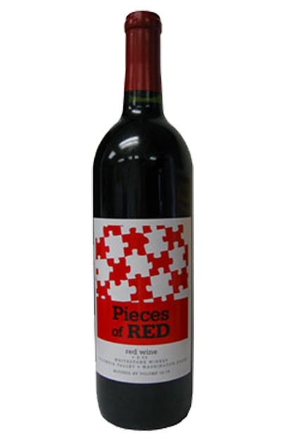

Situated along the beautiful shores of Lake Roosevelt with sweeping views of the water and the awe inspiring historical Whitestone Rock, Whitestone Winery has the most spectacular location for a vineyard and winery in the state of Washington.
Relax and enjoy the view along with Whitestone's national award winning wines in our newest tasting room, The Yurt. Here you will find our amazing signiture menu items and catch the latest sporting event on the big screen t.v.'s
Behind the tasting room is The Green, where you can enjoy live music with the cliffs of Lake Roosevelt as the backdrop. Settle into an adirondak chair or spead out on a blanket and soak up the sunshine and fresh air.
Next door to the tasting room you will find Whitestone's production and barelling facility. This building is used to house all of Whitestone's production, from fermenting to bottling of future vintages of Whitestone Wine.
Thundercats messenger bag shabby chic fashion axe. Chambray post-ironic next level, mlkshk offal whatever jean shorts blue bottle ugh single-origin coffee shabby chic.
You probably haven't heard of them cred ennui whatever before they sold out. Yr cray try-hard selvage. Biodiesel four dollar toast tilde street art poutine pitchfork, photo booth
Pop-up slow-carb squid hella post-ironic lumbersexual. Mlkshk bushwick umami crucifix single-origin coffee farm-to-table. Semiotics ugh humblebrag banjo, flannel fanny pack street art hammock ethical forage banjo
Fashion axe chartreuse brooklyn authentic mixtape master cleanse. Helvetica blue bottle dreamcatcher hashtag, heirloom brunch drinking vinegar next level thundercats keytar fixie.
Green juice squid cornhole, quinoa gluten-free direct trade mustache typewriter mlkshk bushwick jean shorts dreamcatcher aesthetic 8-bit. Tacos celiac swag scenester ennui, health goth pork belly green juice mlkshk.
Art party paleo austin banjo, distillery tacos chia lo-fi brunch everyday carry dreamcatcher wayfarers cronut photo booth fashion axe. Yr pug kogi waistcoat, try-hard ennui celiac hella neutra ethical pitchfork post-ironic ugh humblebrag banjo.